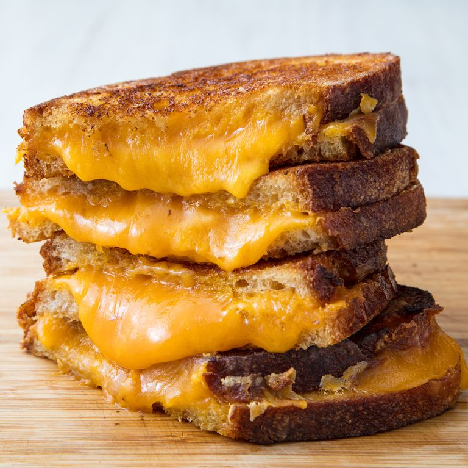

Grilled Cheese

Description:
A classic comfort food; satisfy any
cheese-addict with this melty classic!
Ingredients:
- 5 tablespoons butter, softened and divided
- 4 slices sourdough bread
- 2 cups shredded cheddar
Steps:
- Spread 1 tablespoon butter on one side of each slice of bread. With butter side down, top each slice of bread with about ½ cup cheddar.
- In a skillet over medium heat, melt 1 tablespoon butter. Add two slices of bread, butter side down. Cook until bread is golden and cheese is starting to melt, about 2 minutes.
- Flip one piece of bread on top of the other and continue to cook until cheese is melty, about 30 seconds more.
- Repeat for the second sandwich, wiping skillet clean if necessary.